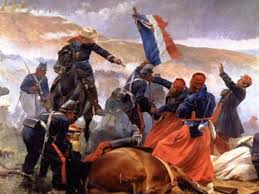
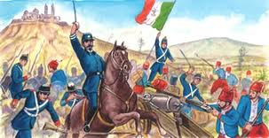
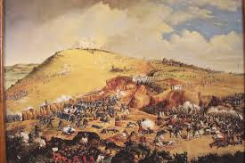
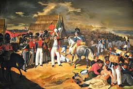
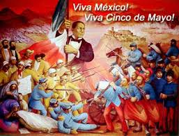
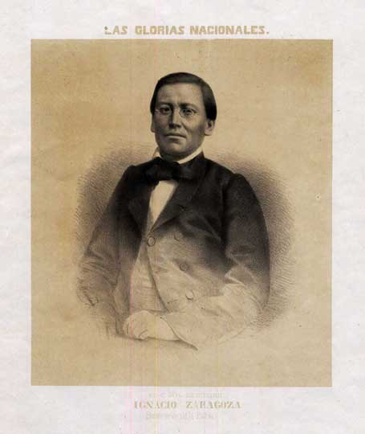
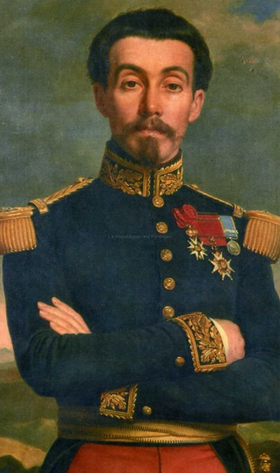
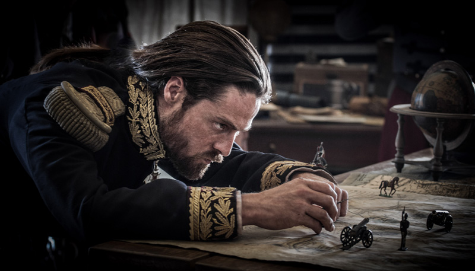

BATALLA DEL 5 DE MAYO
Aplicacion dos
ROBERTO RAMIREZ BALEON
TEMA 1
INICIO Y FINAL DE LA BATALLA
vistaso
La Segunda intervencion francesa en Mexico
fue un conflicto armado entre Mexico y Francia entre 1862 y 1867.
Tuvo lugar despues de que el gobierno mexicano,
encabezado por Benito Juarez,
anunciara la suspension de los pagos de la deuda externa en 1861.
Aplicacion dos
ROBERTO RAMIREZ BALEON
SUBTEMA 1.1
BATALLA DE ATLIXCO
Y
LLEGADA DE LOS FRANCESES
Las flotas britanica, espanola y francesa llegaron a Veracruz, entre el 6 de enero y el 08 de enero 1862 con la intencion de presionar a los mexicanos para cancelar sus deudas. La ciudad de Campeche se entrego a la flota francesa el 27 de febrero,
y un ejercito frances al mando del general Lorencez llego el 5 de marzo.
Cuando los espanoles y los britanicos se dieron cuenta de la ambicion francesa por conquistar Mexico,
retiraron sus fuerzas el 9 de abril. En mayo, los franceses bloquearon Mazatlan por unos dias.
El ejercito frances sufrio una derrota inicial en la Batalla de Puebla el 5 de mayo de 1862 (conmemorado con la fiesta del Cinco de Mayo) contra las fuerzas mexicanas al mando del general Ignacio Zaragoza.
Mas tropas francesas llegarian el 21 de septiembre, y el General Bazaine obtendria mas refuerzos el 16 de octubre. Las ciudades de Tampico, Tamaulipas, fueron ocupadas por los franceses el 23 de octubre,
luego serian tomadas Xalapa y Veracruz pacificamente el 12 de diciembre.
El dia 4 de mayo de 1862, partio muy temprano de Puebla el general Tomas O-Horan rumbo a Atlixco con un batallon de 850 hombres;
a las nueve de la manana almuerzan en Cholula y continuan su camino hacia el pueblo de San Gregorio Atzompa donde se encuentran con jinetes reaccionarios del general Leonardo Marquez realizando un enfrentamiento donde estos emprenden la retirada,
continua la marcha pasando por los ranchos de Santa Ana Acozautla y los Molinos;
finalmente al llegar a Atlixco enfrentan a Marquez obligandolo a retirarse hacia los rumbos de Izucar de Matamoros dejando este,
abandonadas piezas de artilleria y otro pertrechos; ese mismo dia el general O-Horan rinde el parte correspondiente al general Ignacio Zaragoza y al mismo tiempo al general Santiago Tapia, gobernador y comandante militar de Puebla.

SUBTEMA 1.2
BATALLA DE PUEBLA
Y
RAZONES DE LA BATALLA
Despues de los excesos de la dictadura santannista y las batallas de la guerra de Reforma,
Mexico se encontraba en bancarrota sin poder saldar sus deudas con los paises acreedores.
En 1862 las armadas de Espana, Inglaterra y Francia desembarcaron en Veracruz dispuestas a cobrar sus prestamos.
Despues de negociar con el representante de Mexico Espana e Inglaterra se retiraron.
Napoleon III, Emperador del Segundo Imperio Frances queria establecer una monarquia favorable para Francia, y asimismo,
queria disolver el Gobierno Constitucional Mexicano.
Las fuerzas francesas al mando del general Lorencez se componian de (7.000) siete mil soldados que salieron hacia la ciudad de Mexico.
El Presidente Juarez le dio la orden al General Ignacio Zaragoza de detener el avance de las fuerzas armadas francesas en los fuertes de Loreto y Guadalupe cerca de la ciudad de Puebla.
Zaragoza contaba con solo (2,000) dos mil hombres.
El 5 de mayo de 1862, los canones resonaron y los rifles dispararon y mas de (1,000) mil soldados franceses cayeron muertos.
Los mexicanos habian ganado la batalla, pero no la guerra. Sin embargo, esta fecha es la que simboliza el valor mexicano ante una armada tan formidable.
Derrotadas en la batalla de Puebla, se refugiaron en Orizaba mientras esperaban refuerzos para proseguir la ofensiva. Mientras tanto,
Luis Bonaparte, el ambicioso sobrino de Napoleon I, se alio con grupos de conservadores mexicanos para imponer un rey europeo en el pais.
Para junio de 1864, Maximiliano de Habsburgo y su esposa Carlota (austriacos) llegaron a la ciudad de Mexico para tomar posesion del recien formado Imperio Mexicano y fueron coronados como el Emperador y la Emperatriz de Mexico.
Los republicanos, al mando de Benito Juarez, no aceptaron la intervencion extranjera. Se refugiaron en el norte del pias y les pidieron ayuda a los californianos y a otras sociedades
mexicano-norteamericanas con financiamiento y voluntarios para la lucha.
Estados Unidos al termino de su guerra civil, presiono a Francia para que se retiraran. El retiro de las fuerzas francesas en 1867 fue obligado.
Maximiliano, indefenso, tuvo que recurrir a sus antiguos aliados conservadores, los generales Miramon y Mejia, pero ya era demasiado tarde.
Derrotados en Queretaro, fueron fusilados en el cerro de las Campanas.

TEMA 2
PERSONAJES PRINCIPALES DE LA BATALLA
vistaso
Hay una gran variedad de personajes historicos que tuvieron influensia en la batalla y disputa del 5 de mayo,
pero mas razonable es decir,
que las biografias de los personajes mas influyentes estan coloccados en los temas
y en este pequeno vistaso, solo los nombraremos,
las t son los REPRESENTANTE mas importantes y de los que hablaremos en los temas 2.1 y 2.2.
POR MEXICO:
Ignacio Zaragoza-T,
Felipe Berriozabal,
Porfirio Diaz,
Santiago Tapia,
Ignacio Mejia,
Miguel Negrete,
Jesus Gonzalez Ortega,
Felipe Berriozabal.
benito juarez.
POR FRANCIA:
Charles Ferdinad de Latrille conde de Lorencez-T.
Napoleon III,
Leonardo Marquez,
Federico Forey,
Aquiles Bazaine,
Juan Nepomuceno Almonte,

Aplicacion dos
ROBERTO RAMIREZ BALEON
SUBTEMA 2.1
REPRESENTANTE DE MEXICO
IGNACIO ZARAGOZA
Cuando las fuerzas francesas de Napoleon III invadieron Mexico para imponer como emperador a Maximiliano de Habsburgo,Zaragoza,
con el rango de general y al mando del Ejercito de Oriente, las enfrento en Acultzingo en la llamada Batalla de Las Cumbres,
el 28 de abril de 1862, siendo obligado a retroceder.
Zaragoza comprendio la posicion defensiva y favorable que tenia la ciudad de Puebla,
paso obligado para ir a la Ciudad de Mexico.
Al amanecer del 5 de mayo de 1862, el Gral. Ignacio Zaragoza arenga a sus soldados:
"Nuestros enemigos son los primeros soldados del mundo, pero vosotros sois los primeros hijos de Mexico y os quieren arrebatar vuestra patria".
Ordena a Miguel Negrete dirigir la defensa por la izquierda; a Felipe Berriozabal por la derecha y a Porfirio Diaz que este junto a el.
Tras varias horas de lucha, la batalla no se decide, se enfrentan cuerpo a cuerpo mexicanos y franceses, finalmente,
los invasores se retiran mientras Zaragoza grita: "Tras ellos, a perseguirlos, el triunfo es nuestro".
El ejercito frances considerado el mejor del mundo en ese tiempo,
un ejercito profesional, con la fama de haber ganado batallas en Argelia (Legion Extranjera) y de haber entrado al rio Mekong en la Indochina Francesa (hoy Vietnam),
al mando del General Conde de Lorencez, era derrotado estrepitosamente.
Los indigenas zacapoaxtlas, con machete y cuchillo en mano, los persiguieron y acabaron con muchos soldados franceses,
suavos(tropa elite del ejercito frances), belgas, que formaban parte de la invasion.
Cuando en Europa se supo la noticia de la derrota del ejercito frances, el mejor del mundo en Mexico, hubo dolor, terror e histeria,
dado que ningun pais habia humillado tanto a los franceses. Tenian 50 anos que el ejercito frances no era derrotado,
dado que la ultima vez habia sido en la Batalla de las Naciones (Waterloo) en el ano 1815 con la derrota de Napoleon Bonaparte.
Se elevaron voces de protesta por los intelectuales de ese pais,politicos que estaban en contra de la invasion a Mexico y pueblo en general.
El informe que el general Ignacio Zaragoza rindio sobre la Batalla de Puebla al Secretario de Guerra Miguel Blanco Muzquiz fue breve y significativo:
"Las armas nacionales se han cubierto de gloria. Las tropas francesas se portaron con valor en el combate y su jefe con torpeza".
El presidente Benito Juarez seria informado mas tarde.


SUBTEMA 2.2
REPRESENTANTE DE FRANCIA
CHARLES FERDINAND LATRILLES,
En enero de 1862, es enviado a Mexico con refuerzos de L-Herillier y Gambier para la expedicion de Mexico. Llega a Veracruz el 5 de marzo, luego es promovido a General de Division el 20 del mismo mes.
Deja el campo del cerro del Chiquihuite el 19 de abril y entra por la manana siguiente en Orizaba, despues de haber deshecho a unas fuerzas mexicanas en una carga de caballeria. El 23 es reforzado por el general mexicano Galvez acompanado por una fuerza importante de voluntarios conservadores. Desde el dia 27 del mismo mes asume el mando de todas las tropas francesas en Mexico.
Batalla de Las Cumbres
Derrotado por los patriotas mexicanos en el combate llamado Batalla de Las Cumbres el 18 de abril de 1862, entra en Amozoc el 4 de mayo, y al dia siguiente ataca las colinas fortificadas por los fuertes de Guadalupe y Loreto, en las afueras de Puebla. Nunca llego a tomar las colinas que defendian la ciudad debido a su artilleria inadecuada y estrategias deficientes, y a la estrategia mejor pensada del Gral. Ignacio Zaragoza. Se ve obligado a replegarse sobre Orizaba.
Dias antes logra llegar a las Cumbres de Acultzingo el 16 de abril, combate al Gral. Ignacio Zaragoza el 18 de abril y el dia 20 llega a Orizaba en donde se fortifica y decide esperar alli refuerzos. Se prepara para enfrentar de nuevo a Zaragoza, pero los refuerzos que esperaba del conservador mexicano Leonardo Marquez nunca llegaron, pues habia sido derrotado por las tropas republicanas.
La Batalla del 5 de mayo
El cinco de mayo de 1862, Lorencez se presenta al frente de su ejercito, ante la ciudad de Puebla,
con la intencion de tomarla a viva fuerza; previamente, debido a las victorias que habia obtenido en otras batallas en Europa, Lorencez,
despreciando a su enemigo, mando un mensaje demasiado arrogante a Napoleon III, en el cual expresaba:
"Somos tan superiores a los mexicanos, en organizacion, en disciplina, raza, moral y refinamiento de sensibilidades, que desde este momento,
al mando de nuestros 6000 valientes soldados, ya soy el amo de Mexico".
Suponia que le seria muy facil vencer a las tropas mexicanas y desoyendo los consejos de los conservadores, Lorencez ataco prematuramente la ciudad;
las tropas mexicanas del Ejercito de Oriente, comandadas por Zaragoza, rechazaron con valentia al ejercito frances en tres ocasiones,
ayudadas por la inadecuada planeacion y ejecucion de sus asaltos, sorprendiendo la decision con que los mexicanos efectuaron sus acciones defensivas;
todavia, durante el tercer intento, se desato una tormenta que arruino la polvora y la artilleria de Lorencez,
quien se vio obligado a retirarse, humillado y vencido.

TEMA 3
CELEBRACION
vistaso
Las celebraciones de estas dos fechas
tanto como en Atlixco y todo el estado poblano a sido de importancia,
por que pertence a nuestra gran cultura e historia mexicana.
Dato importante :
en estados unidos se celebra el 5 de mayo por que....
A pesar de que no es la fiesta nacional mas importante en Mexico,
los inmigrantes mexicanos lo festejan como un simbolo de orgullo
Aplicacion dos
ROBERTO RAMIREZ BALEON
SUBTEMA 3.1
4-MAYO-1862
En muchos lugares se celebra el 5 de mayo la Gloriosa Victoria del Ejercito Mexicano sobre las tropas francesas; sin embargo, pocos saben que un dia antes,
en la Hacienda La Trapera, ubicada en Atlixco, Puebla, se libro una batalla para cortar el avance de refuerzos,
conservadores que asistian a auxiliar a los invasores.
Por este motivo, en estas tierras se festeja el 4 de mayo el mitico combate pues no se olvida el esfuerzo del pueblo atlixquense,
comandado por los Generales Antonio Carvajal y Tomas O-haran, que tambien rindieron sus ofrendas de sangre a nuestra patria.
cada ano se realiza el tradicional desfile
en donde participan mas de 9 mil personas de acuerdo con documentos historicos en este lugar inicio la Batalla de Puebla.
Durante el evento se lleva a cabo la tradicional quema de banderas, homenaje que se realiza a las acciones heroicas.
El desfile cuenta con la participacion de tropas del Ejercito Mexicano y de diversas escuelas de la entidad
quienes representaron el episodio historico y marcharon por las principales calles de la ciudad.
Cabe mencionar que la Batalla de Atlixco tuvo lugar el 4 de mayo de 1862 en las inmediaciones de la Hacienda de las Traperas en Atlixco.
SUBTEMA 3.2
5-MAYO-1862
El cinco de Mayo se celebra un acontecimiento muy importante para los mexicanos.
Rememora cuando el Ejercito de Mexico pudo derrotar a los franceses, en la batalla que se llevo a cabo en Puebla de Zaragoza, en 1862.
Se celebra especialmente en Puebla, Mexico; y en los estados del Sur de Estados Unidos,
que en otros tiempos formaban parte de Mexico, como California, Nuevo Mexico y Texas.
Siendo Benito Juarez Presidente, y por propuesta de este, el Congreso declaro, por Ley del 17 de julio de 1861,
la cesacion de pagos de la deuda internacional, por el termino de dos anos, debido a la bancarrota en que se hallaba el gobierno de Mexico.
Los principales acreedores eran Francia, Inglaterra y Espana.
Estos paises se reunieron en la Convencion de Londres en octubre de 1861 y firmaron un acuerdo de intervencion en Mexico,
en defensa de los intereses. Los espanoles desembarcaron en Veracruz, al mando del General Prim, en diciembre de 1861,
y en enero de 1962 lo hicieron los franceses e ingleses.
la celebracion siempre se basa en el 5 de mayo para el pais,
aparte los congresos extrangeros no solo Estados Unidos si no francea asen memoriasiones y honor a los caidos,
al igual le asen representacion de su valentia y la valentia de Mexico la cual pensaron que seria una guerra sencilla,
sin en cambio fue lo contrario...